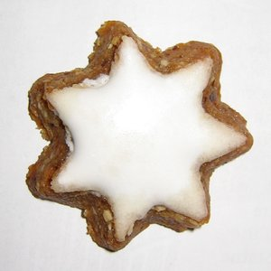
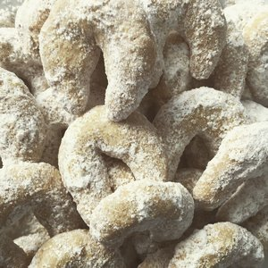
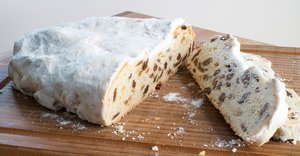

Zimtsterne

Die Zimtsterne sind ein aus Schwaben stammendes Weihnachtsgebäck aus
Eischnee, Zucker, mindestens 25
% Mandeln, Zimt und höchstens 10 % Mehl. Aus den Zutaten wird ein kompakter Teig gefertigt, der sich gut
ausrollen lässt. Nach dem Abtrocknen wird eine Eiweißglasur aufgetragen und die Sterne werden ausgestochen
Vanillekipferl

Die Vanillekipferl sind ein absoluter Klassiker zu Weihnachten. Der
leckere, zarte Mürbeteig, wird
nach dem Backen mit aromatischem Vanille-Puderzucker umhüllt. Sie dürfen auf keinem Plätzchenteller fehlen und
eignen sich perfekt für deine Weihnachtsbäckerei, da der vom Bestreuen übrige Puderzucker direkt für weitere
Sorten verwendet werden kann.
Weihnachtsstollen

Ein Stollen ist ein Kuchen aus schwerem Hefefeinteig. Wertgebende
Bestandteile sind Fett und
Trockenfrüchte (oft Sultaninen) oder andere Füllungen wie etwa Marzipan oder Mohn. Allgemein werden Stollen
ganzjährig hergestellt. Wenn man sie (wie traditionell überwiegend) in der Advents- und Weihnachtszeit
herstellt oder verzehrt, bezeichnet man sie auch als Christstollen oder Weihnachtsstollen, ohne dass es
prinzipiell Unterschiede in der Rezeptur gibt.